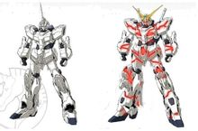
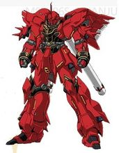
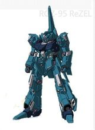
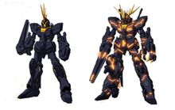
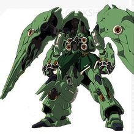
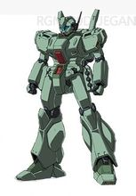
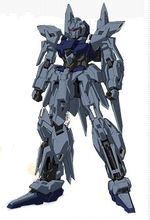
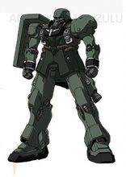

名称：ユニコーンガンダム/Unicorn Gundam/独角兽高达
型号：RX-0
类别：全感应框架试做型机动战士
机师：巴纳吉·林克斯

左：独角兽 右：独角兽NTD发动
全高：19.7米（独角兽模式）
21.7米（毁灭模式）
空重：23.7吨
全重：不明
发电机出力：3480KW（独角兽模式）
测量不能（毁灭模式）
总推力：142600KG（独角兽模式）
测量不能（毁灭模式）
传感器有效半径：22000M(独角兽模式）
测量不能（毁灭模式）
装甲材质：高达尼姆合金
特殊装备：
La+ 程序
NT-D 系统又名（拉普拉斯OS）
武装：
60MM巴尔干炮x2
马格兰光束炮x1
超级火箭炮x1
光束军刀x4
光束加特林x2
专用盾牌（内藏I-力场发生器）
以传说中的圣灵独角兽为名，象征着信念和希望的美丽的纯白色机体。其标号RX-0被赋予了回归原点与开拓新时代的双重意义。独角兽高达的机体可以说是划时代的，其全身活动骨架均采用精神力感应框体构成，极大程度地提高了赛克缪系统的脑波扩展能力以及NT驾驶员的机体适应及感应限界，视NT能力的程度可发挥出深不见底的性能。独角兽高达最大的与众不同之处，就是安装有被称为“拉普拉斯程式”的特殊OS系统，以及作为隐藏底牌的“NT-D”（由于拉普拉斯程序的影响，独角兽高达具有通过检测未知脑波的方式确认驾驶员为NEW-TYPE，从而逐步开启“拉普拉斯程序”内藏资料，因此这“NT-D”应为NewType-Driver） ，即所谓的 Destroy Mode（破坏模式，亦作毁灭模式，当Destroy Mode开启时，机体会发生大幅度的变化，由先前的独角兽变身为毁灭者，机体内部全框架扩张，体型完全改变，装甲结合部滑开，露出精神力框体，全高由19.7M变为21.7M，头部的独角（即NT-D感应装置，有感应脑波的功能）一分为二成为“V字形”，封闭式面罩完全打开，转变为传统意义上的“GUNDAM”造型。虽然Destroy Mode带来巨大的性能提高，不过也使得驾驶员的身体与大脑的双重负担超乎常人想象。因此Destroy Mode的运作极限也只有5分钟左右。其武器包括四柄光束军刀（两柄收纳在前臂的格纳库，平时可用，另外两柄收纳在背包，仅在NT-D模式下可用，即在OVA《赤色彗星》中独角兽高达开场时使用的那柄），光束玛格南步枪（根据小说里描述，其威力可达到舰船主炮等级，是普通光束枪的4倍，即使被擦到边后果都很严重），新超级高能火箭筒，并包括一个能发动小型I力场的盾牌。根据OVA3 拉普拉斯之亡灵，可以确认有光束格林机枪这项特殊武装存在。
——关于独角兽内置系统——新人类驱动系统 NT-D——
<NEW-TYPE DRIVER>一种有意识的系统，可令UNICORN发挥真正的威力，也是独角兽最为强大的地方。
1.通过精神骨架控制机体，达到随心所欲的效果，像神经直接控制肢体一样，但有时间限制。
2.反浮游炮，即抢夺无线式浮游炮的控制权。
3.一种有自我意识的系统，一旦认准为NEWTYPE和有同等能力的敌人（如强化人），启动深层系统，机体全力爆发变得更强，而驾驶员强烈的本心意识可以控制，正如原作中巴纳吉控制住了独角兽没有刺破刹帝利驾驶舱。
杰斯塔
名称：ジェスタ/JESTA/杰斯塔
型号：RGM-96X
机师：华兹·史提普尼、奈吉尔·葛瑞特、戴瑞·麦金尼
全高：19.3米
头顶高：19.2米
空重：24.8吨
全重：52.7吨
发电机出力：2710KW
总推力：89030KG
传感器有效半径：14200米
装甲材质：钛、陶瓷复合材料、部分部位使用高达尼姆合金
武装：
火神炮荚舱x1
光束步枪x1
光束卡宾枪x1
光束军刀x1
3联装手榴弹挂架x2
专用盾牌x1
U.C.0095年,『UC计划』主导者的毕斯特财团委托冯布朗（Von Braun）的AE机动战士研发小组。针对LondoBell独立舰队机动战士与带袖的旗下机动战士的战斗中无法占优，可能让RX-0 Unicorn Gundam无法专注于与New Type及强化人机体作战，最后可能被敌军击毁甚至掳获的问题，研发一种集护卫、快速压制、隐秘作战于一体，足以配合RX-0 Unicorn Gundam扫清周围其他敌机的高性能MS。开发团队比对ARX-014 Silver Bullet 、RGZ-95 ReZEL、RGM-89D Jegan等MS性能数据后，最终选用工业设计中改动空间较大的RGM-89D Jegan作为素体，它便是RGM-96X Jesta。 在使用RX-0 Unicorn Gundam的研发数据以及结合Longdo Bell独立舰队提供的战斗录像对机体进行模拟演算及修改。由于RGM-89D Jegan的机动性不足导致在与『带袖的』的MS的战斗中普遍生还率低下的情况。RGM-96X Jesta使用了一种新型钛合金/陶瓷复合材质为主体的合成夹层装甲，同时加入与新型高达尼姆合金，在保证机体有足够防御力的同时，也减少了机体的额外负重。机体一改Jegan的设计布局，而直接应用了更接近于RX-0 Unicorn Gundam的外形布局。 虽然RGM-89D Jegan核融合炉出力上基本达到预定要求，但考虑为火力支援方案的RGM-96X Jesta Cannon外挂装备增设预留足够的出力，而换装了新型的高出力型核融合炉。机体冷凝导管改为半外露式设计，以保证机体有效散热。为了提升推力使用了新型推进器，并采用和RX-0 Unicorn Gundam相同喷嘴布局。推进器分列背部两侧，使推力系数接近于MSN-001A1 Delta Plus。 RGM-96X Jesta的武器火控系统具有最优秀的兼容性，除了沿用Jegan的Beam Rifle、Beam Saber及三联装裙甲榴弹发射器这些制式兵器外。开发团队为其研发出一种Beam Rilfe衍生武器——Beam Carbine：使用新型连射机构及聚能射击机构，缩短了枪身长度同时使威力有所提升。在需要情况下可装备外接式粒子加速器及光束偏向器，使Beam Carbine射速及射程得到有效的提升。参考了RGM-89S Stark Jegan的武器通用化计划，RGM-96X Jesta亦可以使用其他型MS的武器装备。但与RGM-89D Jegan区别在于，RGM-96X Jesta并不使用手提式盾牌。而是采用了新型可伸缩盾牌中置于背部，需要时采用小型机械臂把盾牌固定于肩上，在运动战中发挥出不俗的防御效果。另外，在设计上Jesta还考虑到了通过在机体上设有的连接口，替换配件或外挂武器，从而转变为火力支援强化和电子侦察强化的型号。 RGM-96X Jesta在出厂后共投入了12机于Londo Bell旗舰Ra Cailum进行测试。同时为了加强整体地面作战能力，开发团队研发出专用气垫式登陆艇L.C.A.C.(Landing Craft Air Cushion)作为地面作战使用的S.F.S(Sub Flight System)。作为Jegan系列的高端量产型生产，无论从技术上还是性能上，RGM-96X Jesta接近于RX-0 Unicorn Gundam的量产机，并在实战中扮演着独角兽的护卫者。有趣的是RGM-96X Jesta设计理念与旧世纪美利坚合众国Navy SEALs的形象十分相似，似乎是设计团队对其功能诠释的一种形象体现。
新安洲
名称：シナンジュ/SINANJU/新安洲
型号：MSN-06S
类别：NT专用试作型机动战士
机师：弗尔·伏朗托

新安洲
全高：22.6米
空重：25.2吨
发电机出力：3240KW
总推力：128600KW
传感器有效半径：23600米
装甲材质：高达尼姆合金
武装：
火神炮x2
光束步枪x1
光束军刀x2
光束斧x2
专用火箭筒x1
专用盾牌x1
MSN-06S新安州是UC0094年时“袖章”部队从阿纳海姆电子公司"抢走"的试作型MS。为了要试验NT-D的性能，它的机体部分活动骨架采用了脑波传导（精神感应）框架，而通过新安州所验证的传导性、强度等等提升资料，后来用于开发制作了独角兽高达。因而新安州和独角兽可以说是兄弟机的关系。新安州的驾驶员是弗尔.弗朗托，是“袖章”部队的领导者，同时也有着“夏亚再现”的称号，而且和夏亚一样总是以面具遮盖住其真面目。（夏亚于UC0093年的战争中，与宿敌阿姆罗一起失踪）
新安州并没有加装浮游炮之类的小型武器，其最大的特点是背部如羽翼般展开的喷射器，其强大动力带来的压倒性机动能力的新安州最令人畏惧之处。而且其腿部的喷口可以向后90°旋转，实现了不必改变机体姿势即可实现三倍速前进，其全身的喷口赋予机体强大的加速度与变向能力。机体也被涂装成夏亚专用的红色。主要武器配置了大型光束枪、巨型盾牌和光束斧剑。 此外还有其专用对MS火箭筒这项专属武装。
里歇尔
名称：リゼル/ReZEL/里歇尔
型号：RGZ-95

里歇尔
类别：量产型可变机动战士
头顶高：20.5米
本体重量：25.8吨
发电机出力：2220KW
最大推力：81500KG
传感器有效半径：14920米
装甲材质：高达尼姆合金
武装：
60毫米火神炮 x 2
光束军刀 x 2
光束步枪 x 1
两联装榴弹发射器 x 1
高能光束发射器 x 1
专用盾牌（内藏小型光束枪）x 1
“惯予Zeta之名的TMS的低成本量产机”------对于从事MS开发的技术人员来说，这是个近乎“被诅咒了”的目标。在爆发与U.C.0087年的“格利普斯战役”中，立下赫赫战功的TMS-----MSZ-006 Zeta Gundam展现出远远超过当时MS概念的性能。因此，也有着各种各样试图将这台杰作机进行量产的计划。但这无疑是相当困难的，无论进行多少次实验也一直无法得出令人满意的结果。
在U.C.0093年两次“新吉恩战争”结束后，联邦政府开始进行军费缩减，预算的减少无疑使原本困难重重的开发计划变得更加艰难。即便如此，开发人员还是在这条充满荆棘的道路上找到了一线光明-----那就是于U.C.0089年入役的地球联邦军主力MS RGM-89 杰刚的扩大生产。通过在机体的设计中加入生产性良好且便于控制成本的杰刚的部件，使得本机作为TMS的开发成本得以大幅消减，同时也使机体的基础设机构架能以现成的部件规格为落脚点，而作为技术层面最为关键的变形机构，本机回归原点，采用了“Z计划”中的衍生物-----MSA-005 美塔斯的变形结构（更直接的说是取自Z II）。与此同时，计划吸取了Zeta开发过程中多台试做机取得的数据经验，开发了新型的操作OS，在降低机体操作难度的同时，还加入了各种辅助机能。其结果便是里歇尔在获得良好的整备性的同时，还获得了能够“宽容”新兵的良好操作性。里歇尔成功达到了量产机所要求的运用条件及性能数值，成为了众望所归的量产型TMS。RGZ-95里歇尔向“精简Zeta”这个课题递出了一份圆满的答卷。
对于一件兵器来说，信赖性是无可替代的第一要求。作为Zeta Gundam的量产机，里歇尔并非是”从100%开始消减“，而是在对以往的技术进行重新审视后，通过“由0%开始构筑”的方式诞生的设计，其本身并没有像之前的方案那样不得不对各方面的要求做出妥协，甚至将TMS的高信赖性特征作为卖点。仅从里歇尔的外观上便可看到众多"Zeta"的影子。在继承前人的优势之后，里歇尔终于打破了这个“诅咒”。
RGZ-95 里谢尔（指挥官型）
类型：指挥官型可变机动战士
头顶高：20.5米
本体重量：28.1吨
发电出力：2220KW
最大推力：85400KG
传感器有效半径：14920米
装甲材质：高达尼姆合金
武装：
60毫米火神炮 x 2
光束军刀 x 2
光束步枪 x 1
两联装榴弹发射器 x 1
高能光束发射器 x 1
专用盾牌（内藏小型光束枪）x 1
RGZ-98里歇尔是AE社在接受了地球联邦军的委托后开发出的量产型TMS（Transformable Mobile Suit=可变式机动战士）。以进行MSZ-006 Zeta Gundam的量产为目的而被开发出来的本机，因为机体本身大量使用了当时主力机体RGM-89 杰刚的部件，即使作为TMS，其制造成本也能够实现大幅度的消减。而在本机的运用方面，也包含有与杰刚进行联携作战的设想，所以也可以看成是在有限经费下能够完成的能够在高要求条件下运用的量产型TMS。
本机虽然被优先配置在了地球联邦宇宙军的独立机动部队朗德贝尔队上，但是从MS部队队长到技术熟练的驾驶员，甚至是新人驾驶员都对这台以重视方向性而被开发的机体的综合性能方面存在着疑虑。为了回应这种疑虑，而重新设计出的修改机，便是这台RGZ-98里歇尔（指挥官型）
本机不仅保存了之前提到过的里歇尔高方向性的特征，甚至可以说是完全无视机体界限，以一般机为基础，将包括主、副推进器在内的一切推进器的推力限制全部解除的机体，因此机体的可动骨架为了能够承住由此产生的负荷而进行了强化，本机不仅仅是最大限度的提高里歇尔本来所拥有的性能，而且还以增强机体耐久方面的信赖性为意图而进行了再调整。除此之外，还提高了机体在操作系统方面的反应速度及追击性，也可以说是将重视总体均一化动作的一般机的概念改变为以驾驶员个人资质及技术作为标准的，能够”选择驾驶员“的机体。
在U.C 0096年，与被称为”戴袖的“的吉恩残党军的战斗中，将一般机背后的部件换成了可变型机翼，装备了高能光束发射器的多台里歇尔（指挥官型）作为队长机被配置在了拟·阿卡玛上。
AMA-X7 尚布罗
机体类型：水陆两用试作型MA
制造商：贾维企业（小说版）
吉翁残党军（OVA版）
全高/全长：31.8m(陆上战斗形态)/77.8m(水中巡航形态)
本体重量：196.8t
全装备重量：283.9t
发电出力：21460kw
推进器出力：226,480kg
水中速度：36kt
陆上速度：142km/h
传感器：12800m
声纳：240km
装甲材质：高达尼姆合金（gundarium alloy）
武装：大口径MEGA粒子炮；扩散MEGA粒子炮×2；反射式BIT×10；大型机械爪×2
机师：罗妮·贾维
尚布罗航向高压的深海中。驱使著装设於肩部装甲内的电磁流体诱导推进组件,以及装在脚部的米诺夫斯基技术应用发动机，及复合型潜航、上浮系统，实现高静音与机动性能。尚布罗一边留下与核融合水流喷射引擎相异的噪音,一边在一百公尺左右的深度将航路改为水平。能展现与外表不符的敏捷性。
独角兽高达2号机“报丧女妖”
名称：ユニコーンガンダム“バンシー”/Unicorn Gundam“Banshee”/独角兽高达“报丧女妖”
型号：RX-0
类别：全感应框架试做型机动战士
机师：玛莉妲·库鲁斯→利迪·马瑟纳斯

左：报丧女妖 右：报丧女妖NTD发动形态
全高：19.7米（独角兽模式）
21.7米（毁灭模式）
空重：24吨
全重：46.7吨
发电机出力：3480KW（独角兽模式）
测量不能（毁灭模式）
总推力：142600KG（独角兽模式）
测量不能（毁灭模式）
传感器有效半径：22000M(独角兽模式）
测量不能（毁灭模式）
装甲材质：高达尼姆合金
特殊装备：
NT-D系统
武装：
60毫米火神炮x2
光束军刀x4
Armed Armor VNx1
Armed Armor BSx1
RX-0的同型机，没有搭载拉普拉斯之箱程序，其NT-D只有感应新人类脑波并启动“破坏模式”的能力，应为NEW-TYPE DESTROY系统，相比RX-0更具破坏力。
有“狮子”的别称，与“独角兽高达”一起暗喻那幅《我唯一的愿望》 （巴纳吉在独角兽高达首次启动时看到的那幅画）中在老妇人身边的狮子和独角兽。
NZ-666 KSHATRIYA 刹帝利

刹帝利
全高：22.3m
重：29.7t
装备重量：22.32t
全重：74.02t
所属：新吉翁
驾驶员：玛莉妲·库鲁斯【Marida Cruz】（マリーダ?クルス）18岁(CV：甲斐田裕子)
有着4具大型平衡推进翼，搭载了脑波传导装置的MS。由机型编号可知它是「NZ-000 京·密煞」（或译为 奎曼莎）系的机体。其多机能平衡推进翼整合了固定式武装、主推进器、浮游炮货柜等复数机能，而此机体在增设平衡推进翼之际，也藉由采用脑波传导框体，不仅具备了和京·密煞同等的运作效能，更成功地将机体小型化。驾驶员为具有高度新类型人能力的玛莉坦·库鲁斯。
RGM-89D 杰刚D型

杰刚
泛用量产型MS
头顶高：19.0
全高：20.4m
本体重量：21.3t
全备重量：47.3t
发电机出力： 1870kw
推进力： 61400kg
加速度： 1.30G
杰刚是联邦军GM系列的发展型。以往GM系列的开发、生产都在联邦军基地进行，而这台机体是阿纳海姆电子公司制造的。运用长期积累的技术设计的GM系MS“MSA-003 雷姆”，参加过格利普斯战役，获得了极高的评价。根据MSA-003 雷姆的设计思想制造的本机，具有非常值得信赖的优秀性能。其作为联邦军的主力机型投入了量产，并配备给了外围独立部队——朗德·贝尔队。由于本机的延展性、平衡性非常之好，所以在第二次新吉恩战争之后还进行了几次改修，到U.C.120年左右仍有本机型在使用。
值得注意的是，高达uc中出现的大部分为RGM-89D，而非《逆袭的夏亚》中出现的RGM-89
RGM-89S STARKJEGAN 强袭杰刚
全高：19.2m
本体重量：28.4t
装甲材质：钛合金陶瓷复合材质取代吉姆系列成为最新主力MS的，是宇宙世纪0096年代地球联邦军所采用的「RGM-89杰刚」的特殊规格机，作为小队长专用机。除了装设增装装甲和推进器加强机体性能，该机体继承吉姆III概念，在双肩上又加装了飞弹发射器组件。为了减少追加装备与机体间的空隙，本体规格和一般杰刚机体的设计也略有不同。
RGM―86R 吉姆III
量产型MS
全高：18.0m
重：36.8t
发电出力：1560kw
推力：81200kg
材质：钛合金
D-50C LOTO 洛特
全高：12.2m(战车时：9.66m、宽：5.78m
重量：16.84t
发电出力：980kw
推力：32400kg
装甲材质：钛合金陶瓷复合材质
由海军战略研究所(SNRI)所开发出的特殊部队用小型MS。地球联邦军特殊部队「ECOAS」会借此机体执行潜入、破坏行动。它能变形为战车形态，此时可作为轻战车、兵员运输车使用。此外，为了能作为现地司令部使用，它也搭载了很充实的通讯设备。其手臂等处设有武装挂架，能够配合任务所需更换装备，在帛琉攻略战中，还会出现双肩搭配了长程炮的机体。
ARX-014 银弹
银弹【ARX-014 SLVER BULLET】
全高：22m
重：-
传感器：-
发电出力：-
推力：-
银弹是以新吉恩量产MS，AMX-014飙狼为基础，由阿纳海姆公司修改而成的机体。本机是在《GUNDAM ACE》上连载的漫画《机动战士高达UC B.D.》中登场的原创MS。并未在小说和OVA中出现。
漫画中，本机与另外三部机体（机种不明）来测试独角兽高达的性能，但是本机的驾驶员不满独角兽高达，因此使用真枪实弹对独角兽高达进行攻击，卡迪亚斯为了更好的测试独角兽高达的性能，并未阻止银弹驾驶员的行动。但是，当独角兽高达开启【拟似 NT-D】系统时，独角兽高达仅用手就把银弹的左手撕断了。其后银弹被独角兽高达徒手打穿了机体的胸部，使此机蒙上了悲剧的色彩。其后独角兽高达再以双手撕裂两架机体（机种不明），就要攻击最后一部机体的时候，独角兽高达停了下来，但原因不是【拟似 NT-D】系统被强行中断，而是因为驾驶员的生命反应消失了。本机最终成为了试验【NT-D】系统的牺牲品。
MSN-001A1 德尔塔+

德尔塔
MSN-001A1 Delta Plus(Δ+)其实是U.C.80年代中期，在A.E.U.G的帮助下，AE社着手进行TMS(Transformable Mobile Suit)的开发『Z计划』中的一环，是志在拥有变形结构的高机动泛用机体MSN-001 Delta Gundam的发展型MS。在当时，MSN-001 Delta Gundam关键性的技术难题——结构强度问题迟迟得不到解决，即当采用复杂的变形结构，机体的框架就无法将承受较高的G力。这导致MS的开发陷于停滞。鉴于机体其他部分的开发完成度已经较高，出于Greps战役的日渐激烈，无奈之下，在开发主任M·Nagano博士的主导下，只得将变形结构舍弃，得到了轻量化的MSN-100 百式，并投入到了前线，还成为了当时A.E.U.G的旗机。
随着时间的推移，TMS的研发技术也不断进步。AE公司利用MSZ-006Zeta Gundam的反馈数据，对Delta Gundam的设计进行改良，通过优化躯干部分的框架布局及新型材料的引用，成功实现了最初的设计初衷。与Zeta Gundam相同，Delta Gundam可变形为Waverider巡航形态，机体可在这种形态下单机突入大气层，并可以在1G重力的条件下飞行。与此同时，在MS形态下，机体保留了百式的轻量化框架，原本作为Waverider形态的两翼可置于背后，作为可活动的Binder推进翼使用。由此可见，该机不但拥有来自Zeta Gundam的变形结构，并且继承了百式系列一贯出色的高运动性。
MSN-001A1 Delta Plus(Δ+)在武装方面，继承了已经成熟的标准配置的Beam Rifle及Beam Saber。之外，Delta Plus得益于核融炉技术的进步，还可以搭载Full Armor百式改所使用的长距离MEGA粒子炮，大大提高了单机火力，该武器在Waverider形态下也可使用。这样的武装即使在90年代，也凌驾于大部分的量产机火力之上，并且与当时的尖端机并驾齐驱。
时光荏苒，U.C.0096年拉普拉斯战争期间，遭到『带袖的』袭击，损失数架MS的Londo Bell战舰Nahel Argama急需补充战力，随同战舰的亚伯特·毕斯特通过毕斯特财团的影响力要求AE社火速送来支援。仓促之中，尘封多年的Delta Plus被拖出仓库，经过简单整备后便作为支援送往Nahel Argama吗，并被分配为利迪·马瑟纳斯少尉的座机。尽管被Nahel Argama上的整备兵视为10年前的古董机，但在利迪少尉的操纵下，Delta Plus甫上战场就立刻击落了三架敌机，其性能不但凌驾于新锐Zeta量产机RGZ-95 Rezel之上，甚至可以达到Gundam级别的水准，『带袖的』亲卫队长安杰洛上尉将此机称作『无角的Gundam』。
在Palau攻防战与RX-0 Gundam Unicorn并肩作战后，该机随利迪少尉降下地球并转战四方，并与战舰Ra Cailum上的Jesta三连星小队再次上演了经典的『竟然用我的头当踏板』名场景。凭借极高的泛用性和十分安定的性能，MSN-001A1 Delta Plus(Δ+)尽管没有实现量产，却印证了当年Nagano博士『此机可用百年』的豪言壮语，成为宇宙世纪机动兵器中的一颗璀璨遗珠。
AMS-129 Geara Zulu

吉拉·祖鲁
AMS-129 Geara Zulu是AE公司在第二次Neo Zeon战争(夏亚反乱)期间为Neo Zeon开发的量产机AMS-119Geara Doga的次期主力量产机。是因为考虑到夏亚率领的Neo Zeon与地球联邦军之间抗争长期化的可能性，而在AMS-119 Geara Doga的基础上继续开发设计的。
AMS-129 Geara Zulu是真正意义上的新规格机，AE公司在开发AMS-129 Geara Zulu时，采用了包含新型OS、新型材料在内的各种次代MS所可能需要的一些技术。新型OS可以对机师起到辅助驾驶，动作精度更高，更能简单的根据运用部队任务、驾驶者的级别进行修改，达到良好的驾驶体验。全景式驾驶舱，鼠标式的Arm Layer，更为贴合人体工程学的安全气囊也提升了机师的生存率。
U.C.0093年，夏亚反乱的终结，为Neo Zeon而开发和量产的AMS-129 Geara Zulu也均被搁置。但其后，被叫做『带袖的』的Neo Zeon残党蜂拥而起，由于在开发中迎合了作为『Zeon复兴』的象征的工业设计，同时是新型主力量产机装备的需要，Geara Zulu的正式生产再次启动。
由于『带袖的』的组织规模甚至远不及当年的Neo Zeon，所以AMS-129 Geara Zulu只做为少数精锐、近卫部队装备的机体。机体手臂和胸部有着特殊的纹路和标志，也是『带袖的』称呼的由来。『带袖的』根据任务不同，驾驶者的级别，有头部装饰和袖饰设计、外部装甲形状不同的区别。同时也存在着换状为作为重武装式样的长距离炮装备的大型背包的衍生型。可以说，AMS-129 Geara Zulu是同期内最具有高性价比的杰作机。